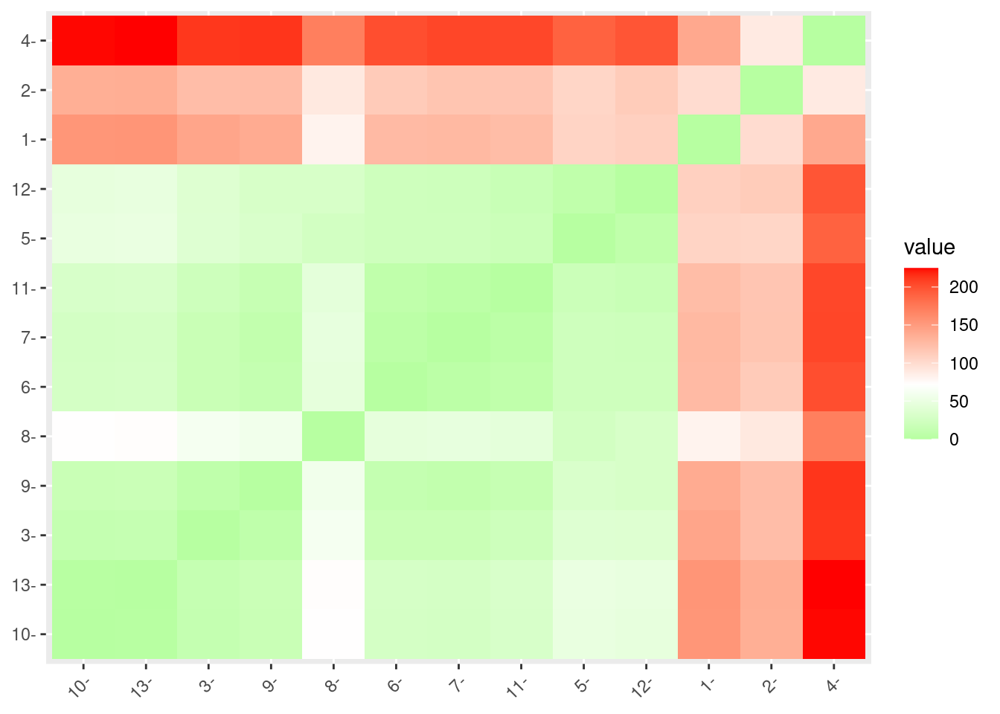
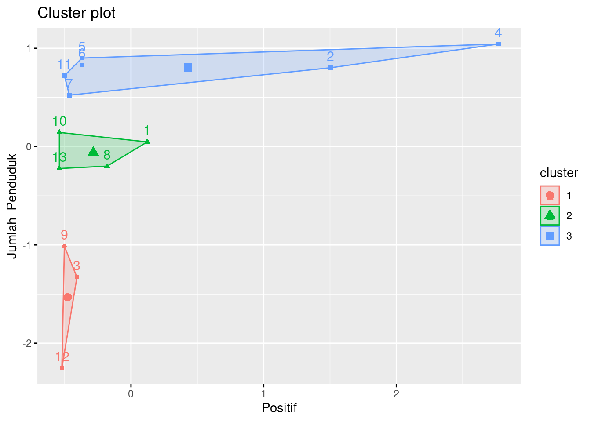

| Kecamatan | Positif | Suspect |
|---|---|---|
| Tlanakan | 168 | 39 |
| Pademawu | 103 | 78 |
| Galis | 35 | 11 |
| Pamekasan | 148 | 135 |
| Proppo | 67 | 14 |
| Palenggaan | 53 | 18 |
| Pegantenan | 48 | 8 |
| Larangan | 97 | 20 |
| Pakong | 45 | 8 |
| Waru | 27 | 7 |
| Batu Marmar | 57 | 8 |
| Kadur | 71 | 9 |
| Pasean | 25 | 7 |
## Positif Suspect
## Min. : 25.00 Min. : 7.00
## 1st Qu.: 45.00 1st Qu.: 8.00
## Median : 57.00 Median : 11.00
## Mean : 72.62 Mean : 27.85
## 3rd Qu.: 97.00 3rd Qu.: 20.00
## Max. :168.00 Max. :135.00

Copyright © 2020 MohSaleh, Inc. All rights reserved.